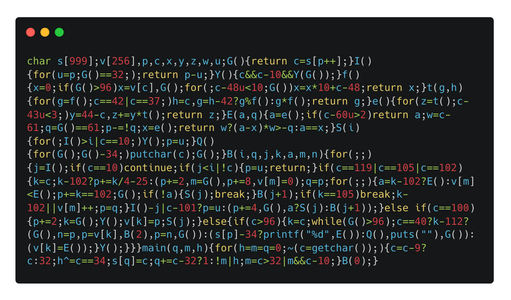
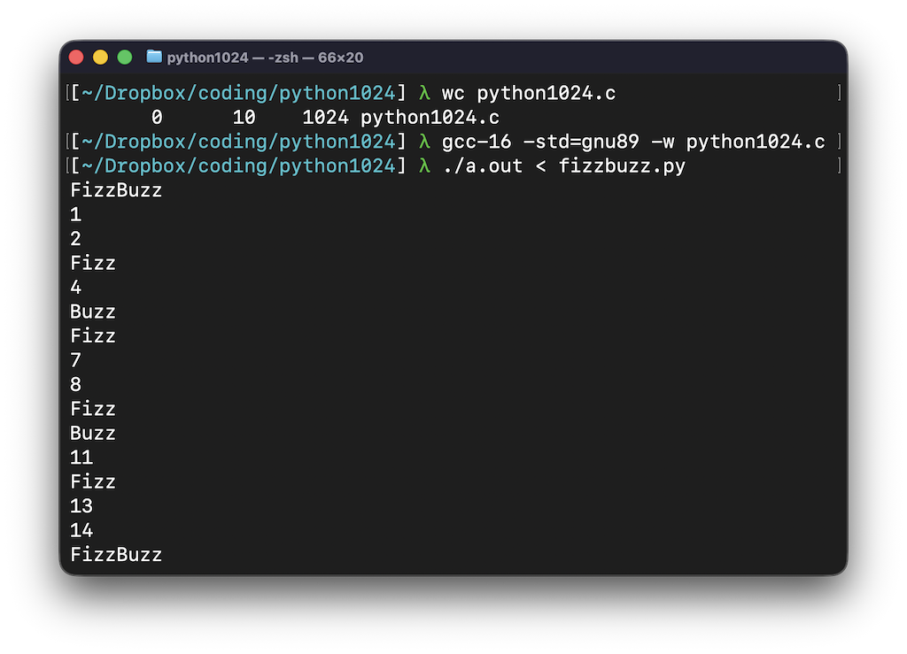

I build tools for people

See the discussion of this post on Hacker News, r/programming, and Lobste.rs.
To feel human, I write code by hand on the weekends.
My latest challenge? Make a Python interpreter in 512 1024 bytes of good ole C code. Oh, and no macro shenanigans or library tomfoolery.
def buzz():
for n in range(101):
if n % 15 == 0:
print("FizzBuzz")
else:
if n % 3 == 0:
print("Fizz")
else:
if n % 5 == 0:
print("Buzz")
else:
print(n)
buzz()
I probably can't fit all of the Python language into an interpreter that is only 1024 bytes of code. So what can I fit that will look like Python?
This fizzbuzz program looks distinctly Python. It has the def, the colons, the indentations, and no parentheses for if statements. Looks like Python to me! Of course, I'll also have to add some additional limitations beyond just a subset of the syntax.
My first attempt was bad though.
I've written many recursive descent parsers, so how different can this be? A subset of Python should be similar to the other languages I've implemented (such as my Teeny Tiny compiler).
I started with the most basic code I could think of: 1 + 2
Then I made it more complex: x = 1 + 2 * 3
And then I even added statements: if x > y: z = 3
Great, I made a calculator... Not what I meant with this challenge! I was already over the limit too. That is when I zoomed out and made a list of elements that look Pythony, while also realizing that my code golf skills were not up to snuff to make it fit in 512 bytes.
Maybe I can do it in 1024 bytes? First, make it work, and then make it small.
The actual CPython implementation tokenizes the Python source, parses it into an abstract syntax tree, performs some analysis and optimizations, emits bytecode, and then interprets the bytecode.
This won't really do any of that.
The state is held in a handful of global variables. It uses a fixed-length array (999 for now) that will hold the raw Python code. The variables and function names all fit into a single array.
char src[999]; /* Entire program without most spaces. */ int vars[256]; /* Symbol table. */ int pos; /* Next character in src. */ int ch; /* Current character in src. */ int line_start; /* Where the current line starts. */
The expressions are handled like any other recursive descent parser, and they are executed along the way. For example:
int parse_sum(void) {
int value = parse_term();
while (ch == '+' || ch == '-') {
if (ch == '+')
value = value + parse_term();
else
value = value - parse_term();
}
return value;
}
Straightforward so far.
There is no error handling of any kind! It makes a lot of assumptions based on the correctness of the code. For example, it assumes that the keywords are all typed out correctly.
if (ch == 'w' || ch == 'i' || ch == 'f') {
int keyword = ch;
int loop_var = 0;
if (keyword == 'f') { /* "for K in range(N):" */
pos += 2; /* Skip "or". */
loop_var = next();
pos += 8; /* Skip "inrange(". */
vars[loop_var] = 0;
} else if (keyword == 'w')
pos += 4; /* Skip "hile". */
else
pos += 1; /* Skip "f" of "if". */
It also assumes the token boundaries are correct and strips out most whitespace. It keeps indentation and spaces in string literals.
It is limited to variable names of a single, lowercase character, which allows us to do symbol table lookups directly:
if (ch > 96) {
value = vars[ch];
next();
}
The function for executing blocks of code continues until the indentation decreases. When that happens, it returns, and it is up to the caller to handle the next line. So, it is using the C program's call stack to handle the recursion.
void run_block(int min_indent) {
for (;;) {
int indent = read_indent();
if (ch == '\n')
continue;
if (indent < min_indent || ch == 0) {
pos = line_start;
return;
}
But what about loops?!
Since nothing is compiled, loops work by jumping backwards and reparsing the source each iteration. Both while and for loops keep track of the position of the condition expression. After the body executes, it jumps back to that position and continues parsing.
Functions work in the same way. When parsing the definition, the symbol table remembers the position of the function in the source code. Then when parsing a function call, the caller location is saved, the parser jumps to the function body, executes the body, and restores the caller location when it reaches the end.
It is quite beautiful what we can do even with no intermediate representation! The interpreter maintains very little state too.
I haven't code golfed much. Trimming the variable names and whitespace is obvious, but how do I save the big bytes?
There exists an ancient, forgotten website called Stack Overflow where the code magicians of yesteryear shared their knowledge. I learned a lot of ideas from Tips for golfing in C.
Since rules only exist in your imagination, I did have to get creative. Some of those tips rely on "features" specific to GNU C89. This is not tomfoolery! This is conventional fiddle-faddle. Here is what I did to shave off bytes from the readable version:
For example, the parse_sum(void) function that I showed earlier was golfed down to e(){for(z=t();c-43u<3;)y=44-c,z+=y*t();return z;}. It uses ASCII values to shave a few bytes.
Another example is a helper function that skips to the end of a line:
void skip_to_eol(void) {
if (ch != 0 && ch != '\n') {
next();
skip_to_eol();
}
}
I got it down to: Y(){c&&c-10&&Y(G());}. It tests for 0, subtracts 10 to check for a newline, and uses && instead of an if. Then it saves a byte by doing Y(G()); instead of G();Y();. Clever! Thanks again to that Stack Overflow post.
After everything, the golfed version is 1024 bytes!
The final readable version is over 4800 bytes. I originally had several more features but I kept cutting to make it fit. The comparison expressions were next on the chopping block, since that eats up a lot of bytes and truthiness still works without them: if n%15:.
If all I cared about was making fizzbuzz work, I think I could get below 800 bytes! There are probably other golfing tricks too.

Here is the golfed source in all its glory:
char s[999];v[256],p,c,x,y,z,w,u;G(){return c=s[p++];}I(){for(u=p;G()==32;);return p-u;}Y(){c&&c-10&&Y(G());}f(){x=0;if(G()>96)x=v[c],G();for(;c-48u<10;G())x=x*10+c-48;return x;}t(g,h){for(g=f();c==42|c==37;)h=c,g=h-42?g%f():g*f();return g;}e(){for(z=t();c-43u<3;)y=44-c,z+=y*t();return z;}E(a,q){a=e();if(c-60u>2)return a;w=c-61;q=G()==61;p-=!q;x=e();return w?(a-x)*w>-q:a==x;}S(i){for(;I()>i|c==10;)Y();p=u;}Q(){for(G();G()-34;)putchar(c);G();}B(i,q,j,k,a,m,n){for(;;){j=I();if(c==10)continue;if(j<i|!c){p=u;return;}if(c==119|c==105|c==102){k=c;k-102?p+=k/4-25:(p+=2,m=G(),p+=8,v[m]=0);q=p;for(;;){a=k-102?E():v[m]<E();p+=k==102;G();if(!a){S(j);break;}B(j+1);if(k==105)break;k-102||v[m]++;p=q;}I()-j|c-101?p=u:(p+=4,G(),a?S(j):B(j+1));}else if(c==100){p+=2;k=G();Y();v[k]=p;S(j);}else{if(c>96){k=c;while(G()>96);c==40?k-112?(G(),n=p,p=v[k],B(2),p=n,G()):(s[p]-34?printf("%d",E()):Q(),puts(""),G()):(v[k]=E());}Y();}}}main(q,m,h){for(h=m=q=0;~(c=getchar());){c=c-9?c:32;h^=c==34;s[q]=c;q+=c-32?1:!m|h;m=c>32|m&&c-10;}B(0);}
In the end, I was able to implement these features:
I don't think I will be doing any code golf challenges again in the near future. The process was quite tedious, going back and forth between the gulfing-in-progress version and the original version to try to understand what I changed just 2 minutes ago. Both versions are on GitHub.
Now it is your turn. What does your Python in 1024 bytes look like?